XR2とAeroBrake MFDでの着陸
XR2 RavenstarのAuto-Land機能と、AeroBrake MFDを使って着陸します。
今回はフライトスティックは一切使いません。
AeroBrake MFDのダウンロード・インストール
ダウンロードしたファイルを解凍して、中身をOrbiterのインストールフォルダに上書き。
LaunchpadのModulesタブでAeroBrakeMFDにチェックを入れる。
XR2+AeroBrake MFDでの着陸手順
宇宙ステーションを離脱。（Ctrl+Dで分離する）
近地点を下げる
Map MFDを見ながら、着陸予定地点へ最接近するタイミングを待つ。
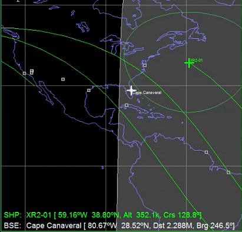
あと1周を切ったら、目標地点の裏側でRetrograde噴射をする。
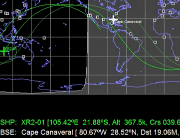
近地点の高度(PeA)が40km程度になるようにする。
針路を調整する
ある程度、目標地点に近づくのを待つ。
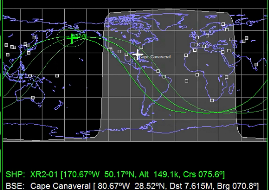
Map MFDを見ながら、Orbit Normal（+か-）オートパイロットを使って、目標地点のおおよそ真上を通るようにする。※
BaseSync MFDを使うと効率がよい。
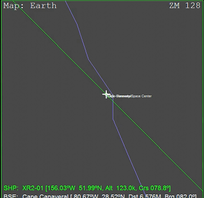
※参照：月基地への軌道修正 補足解説
針路が決まったら、余分な燃料を捨てる。
残り30%以下を目安にする。
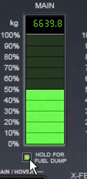
AeroBrake MFDを開く
SELをクリックして、AeroBrake MFDを起動する。
TGTをクリックして、Cape Canaveralを指定。
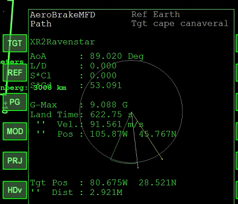
機首をProgradeの方向に向けておく。
降下軌道に入る
キーボードのLを押して、Attitude Holdオートパイロットを起動。
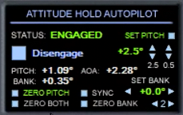
テンキーの2を何度か押して機首を引き起こす。
AeroBrake MFD上のふたつの直線が重なるようにする。
（黄色が目標地点、白が予測される着陸地点）
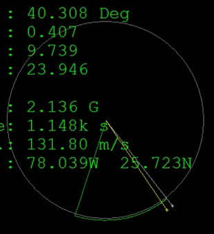
PGをクリックしてから、PRJをクリックするとマップ画面になる。
右上に着陸目標と予測針路が表示されるので、両者が重なるように機体の姿勢を変える。
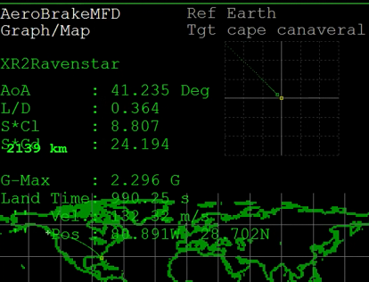
具体的には、テンキーの2・8と4・6を使う。
再突入
キーボードの9を押して、再突入チェックをする。
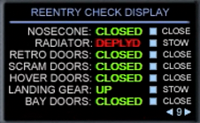
Radiator（ラジエータ）を格納しておく（STOWにする）。
Attitude Holdオートパイロットを起動させた状態で高度が下がる（大気圏に入る）と、APUが自動的に起動する。
キーボードの3を押して温度を確認しつつ再突入する。
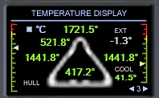
AeroBrake MFDの表示を見つつ、目標地点を目指して機体の姿勢を変える。
目標地点に近づいたら、オートパイロットを切る。
VORやHSIの使い方については、以下の項目を参照してください。
ホバーエンジンを使った着陸
滑走路に接近したら、HoverとRetro DoorsをOPENにする。

キーボードのGを押してランディングギアを展開。
Ctrl+Bを押してエアブレーキを展開。
キーボードのAを押して、Descent Holdオートパイロットを起動。
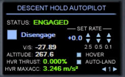
Auto-Landボタンをクリックする（もしくはテンキーで0を押す）と自動着陸に入る。
RCSを使って針路を微調整する。
逆噴射（テンキーの-（マイナス））で速度を落とす。
ホイールブレーキ（キーボード,（コンマ）.（ピリオド））を押しっぱなしにして着陸する。
着陸したらオートパイロットは自動停止する。
停止したらEXTERNAL COOLINGを起動して、冷却材の温度を下げる。